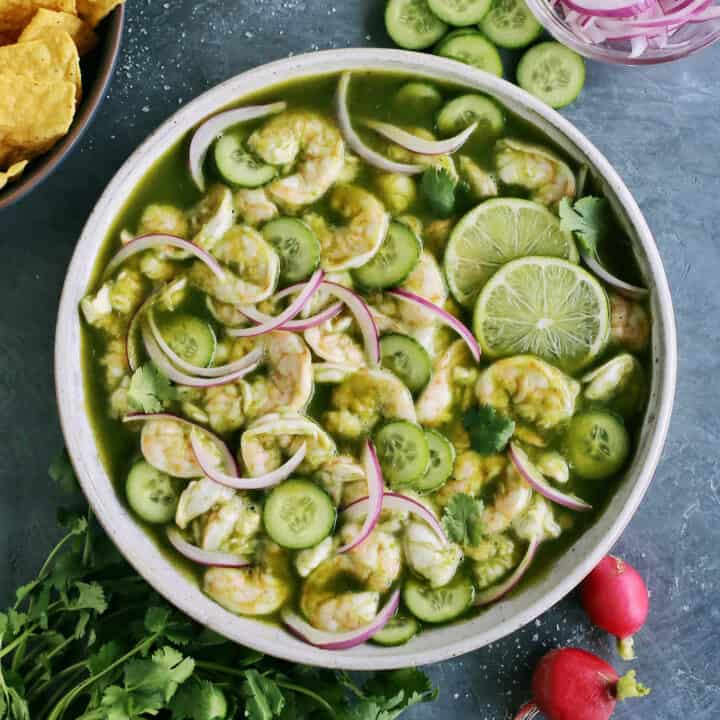

Aguachiles1

Description
A refreshing and spicy delicacy originating in Sinaloa, Mexico. If bullets
weren't enough to make you sweat during your daring travels south of the border,
this seafood dish will certainly leave you sweating.
Ingredients
- 1 Cucumber
- 1 Bunch of cilantro
- 6 Serrano peppers or 10 green thai peppers
- 2 lbs shrimp, deveined and butterflied
- 1 Red onion
- 3 cups of lime juice
- Salt to taste
Steps
- Peel and devein shrimp if not done already
- Add the lime juice to the shrimp so that it starts curing
- Place chilies and cilantro into a food processor and blend until bright green
- Slice onions and cucumber to desired shape (slices or dices) and add to bowl
- Add salt to desired taste